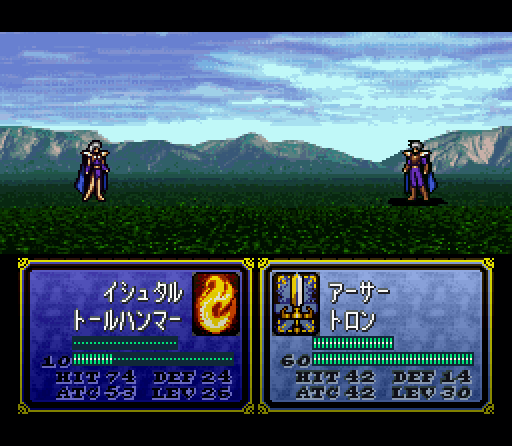
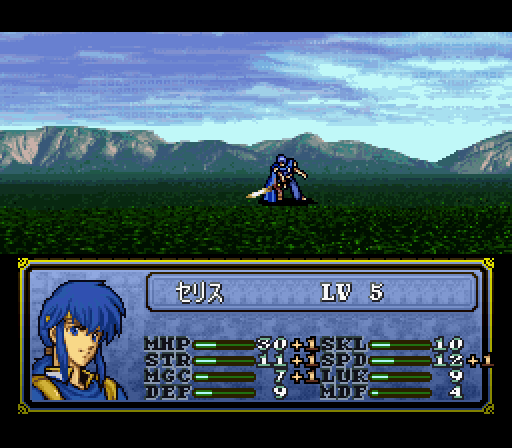
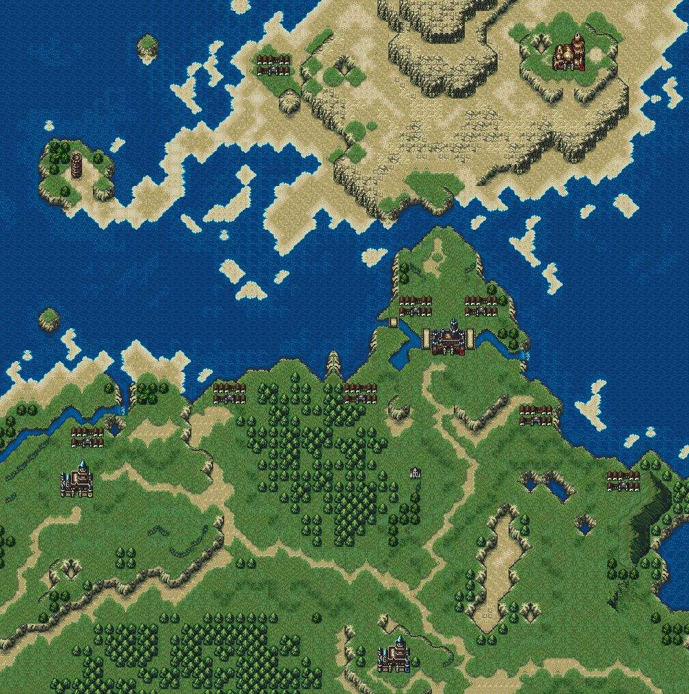
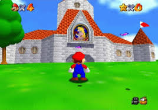

Putting Fire Emblem 4 into Perspective
Animation of the games combat. Sprites provide a good idea of what people look like while allowing a decent amount of flash in attacks. This image is showing off two mages fighting with lightning magic.
Many characters featured very poofy hair. Faces looked similar so hairstyle was the main way a unit portrait could be indentified. Battles had been given backgrounds to take place in. It was possible to see different types of weapons in battle.
Genealogy maps tended to be quite large. The game has a lot less chapters than most other games due to map size. This tends to work both for and against the game. On one hand it feels like you are actually taking down a country, but moving your army across terrain can get a bit tedious since each unit needs to be individually moved.

Fire Emblem 4 released in the year 1996. That was a very strong year for video games a number of notable releases overshadowing the game such as Super Mario 64, PokeMon Red and Blue, Resident Evil, and Quake. The game wasn't breaking any records for graphics but it was far from the worst offering available at the time when people were grappling with 3D development on the newer consoles.
Plot of the game
In the year Grann 757, barbarians from the kingdom of Issach siege Darna Castle, and Prince Kurth of Grannvale and his friend Lord Byron of Chalpy set out on a punitive expedition. When the southwestern kingdom of Verdane takes advantage of Grannvale's weakened state to invade, Byron's son Sigurd repels them and launches a counter-invasion. During the campaign, Sigurd meets a mysterious girl named Deirdre. She is revealed to be of Naga blood, a long-lost member of the Grannvalian royal family, and the descendant of the crusader with the power to defeat the evil dragon Loptyr. Sigurd and Deirdre fall in love and marry, and their son Seliph is born in Agustria. At this point, an alliance of Grannvale dukes stage an attempt to seize the throne, murder Kurth, and frame Sigurd and his father for the crime. Sigurd is forced into exile, while the archbishop Manfroy of the Loptyr Sect kidnaps Deirdre and erases her memories in order to use her to resurrect Loptyr. His plan is to wed her to Lord Arvis of Velthomer - the two are, unbeknownst to them, half siblings, and their union will produce a human vessel capable of hosting the consciousness of Loptyr. During their exile, Sigurd and his allies are forced to hide Seliph and the rest of their children from the forces of Arvis and the Loptyr cult. After a year in exile, Sigurd begins making his way back through Jugdral, killing the Dukes responsible for the false accusation. Apparently exonerated, Sigurd returns to Grannvale, only to learn that Arvis has married Deirdre to become Grannvale's king. Arvis orders Sigurd's allies to be executed and personally murders Sigurd in a playable sequence.
Over the next fifteen years, Grannvale expands to hold dominion over the whole of Judgral, and Arvis turns Grannvale into an empire and styles himself emperor. He and Deirdre have twin children: Julius, the scion of Loptyr, and Julia, the scion of Naga. Manfroy uses the Loptyr tome to corrupt Julius and turn him into Loptyr's vessel, and Deirdre sacrifices herself to warp Julia away from Julius. Julius overthrows his father and turns the Empire into a tyrannical regime. At this point, Seliph comes out of hiding to protect a nearby village, revealing his long-hidden existence to Grannvale. Traveling across the lands of Jugdral, Seliph reunites with the long-hidden children of Sigurd's companions, including Julia. Making his way through the countries of Jugdral, he gains support from the surviving powers, and gradually frees Grannvale's conquered territories. Arvis is powerless to subvert his son's rule, and is killed in battle against Seliph. During the course of these battles, Julia is captured and Manfroy and Julius attempt to sacrifice her as her powers could banish Loptyr for good. Seliph manages to save her, and after defeating Manfroy and Julius in battle, Julia successfully banishes Loptyr, ending his rule for good and allowing Jugdral to recover from the recent conflicts. Seliph takes his rightful place on the throne as the emperor of Grannvale, and restores power to the surrounding countries with their respective heirs.